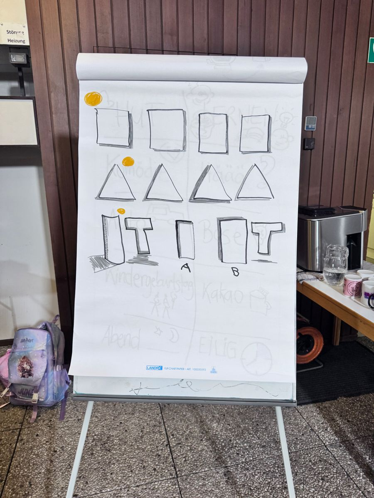

Warum wollten nach einer Klausurtagung plötzlich alle eine Visualistin?
Geschichte lesen
Ich habe mitgezeichnet, live, auf einem Flipchart. Am Ende hatten alle ein Bild von dem, was sie gerade gemeinsam gedacht hatten. Danach kamen gleich mehrere Anfragen.
Hier kommt dein Satz: Was war die Frage? Was hat sich danach verändert?